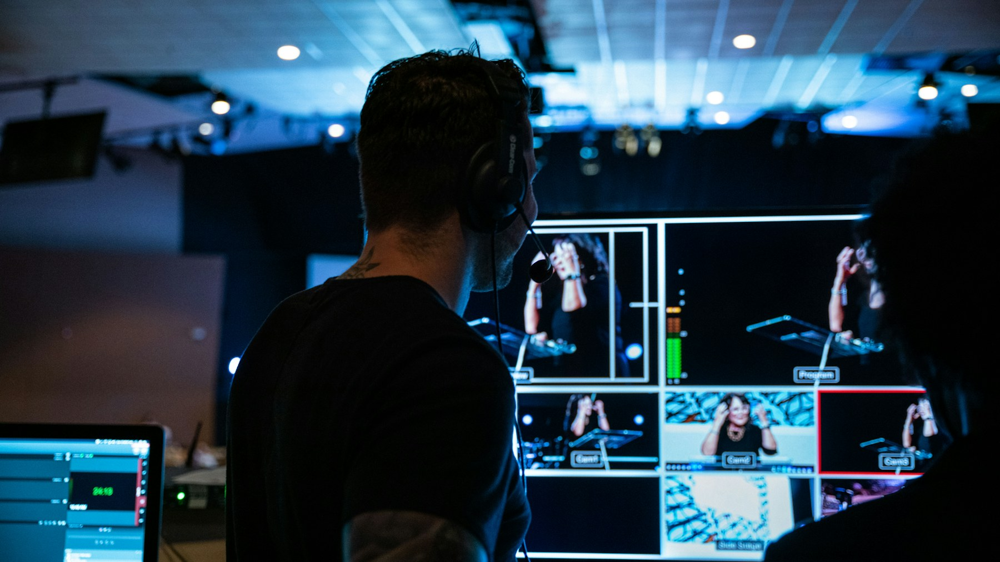

Churches & ministries
Branding, communication, websites, production, and systems for congregations.
Ascend Studio
Strategy, design, digital, and production expertise for churches, ministries, and purpose-led organisations.

02 / Ascend Studio
Strategy meets expression.Brand, digital, and production expertise for organisations with something meaningful to say. From the first conversation to the final detail.
A brand should make who you are unmistakable. We connect positioning, voice, and visual identity into a coherent system your team can use with confidence.
Connect with your audience throughout the week through purposeful content, social strategy, search, email, advertising, and podcast production.

Thoughtful websites and companion apps that make information easy to find and action easy to take. Built around your audience, with content your team can manage.
Considered planning, on-site coordination, film, and photography for conferences, launches, outreach, and moments that bring people together.

Cameras, lighting, audio, displays, and streaming systems designed for your space and the people who operate them. Installation and practical team training included in scope.
7+Years of agency experience
47Websites in the team portfolio
30 minA free strategy call to begin
Listen carefully.
Build with intention.
Who we serve
Branding, communication, websites, production, and systems for congregations.
Personal identity, digital presence, content, and video for agents and brokers.
Creative services scoped around the needs of nonprofits and mission-led businesses.
Our process
Begin with a free 30-minute conversation.
Understand the brand, platforms, and goals.
Agree a practical scope and roadmap.
Create, review, test, hand over, and optimise.
Project FAQs
Each project is scoped individually after the first conversation.
Scope and content readiness determine the timeline, which is agreed in the proposal.
Most work can be delivered remotely; on-site production and installation are scoped separately.